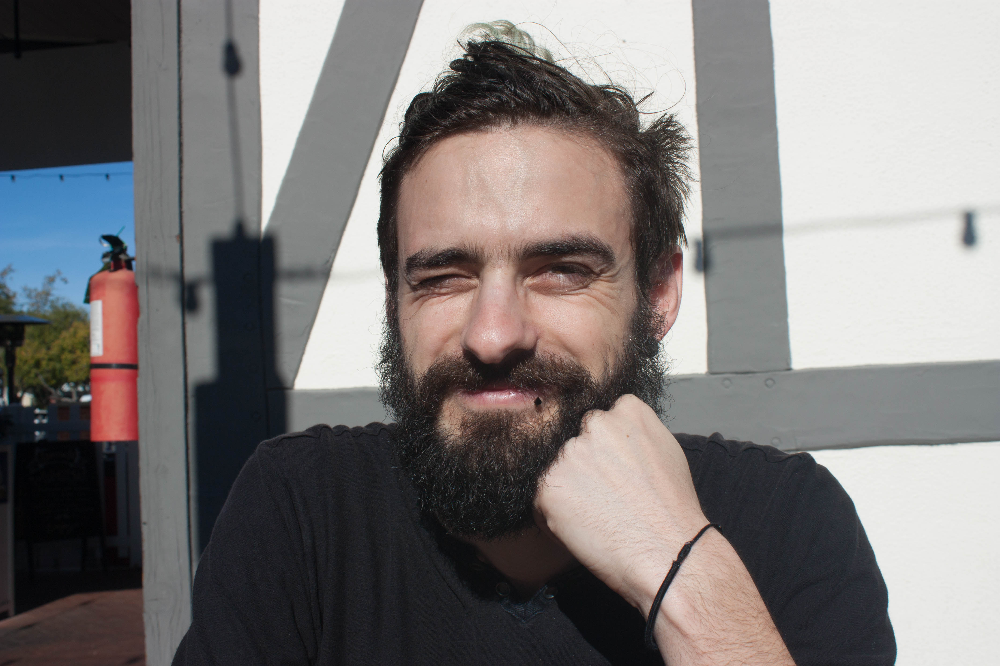

About Me
Hello! My name is Basile Hurat. I am an applied mathematician who studied at San Diego State University for my masters. There, I focused on the mathematics behind signal/image processing and analysis. Specifically, my research has been focused on empirical wavelets, an adaptive multi-resolution analysis method. During my masters, I worked on developing a 2D empirical wavelet of arbitrary shape. Multi-resolution analysis has many applications, and you can learn more in the research section of my website.
Outside of my research, I also play tabletop role-playing games, take photos, and love finding new music. If you are curious about this, you can see some of what I'm into.